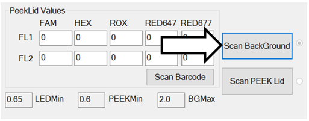
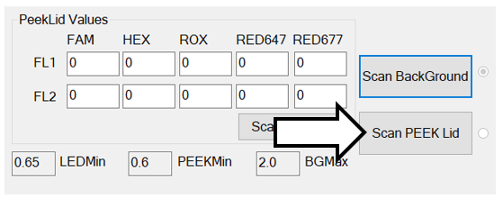
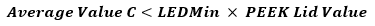
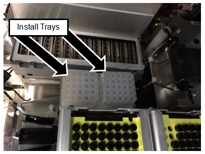
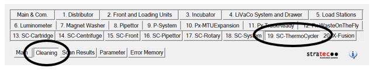
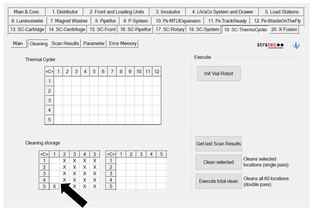
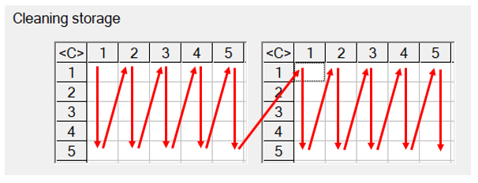
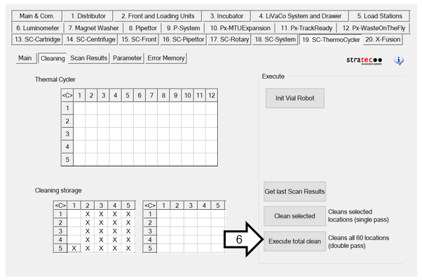

Thermocycler Scanning and Automatic Cleaning Instructions
PART A: Scan Background
Thermocycler Scanning and Auto-cleaning MUST be performed during:
- A Total Service Call - if a Total Service Call was performed more than 30 days ago.
- 1-year PM
- Installation of a Fusion
- Installation of new Thermocycler
PART B: Scan PEEK Lid

|
Note— If a Thermocycler Scan finds that a well does not pass a scan test, the specified well will need to be cleaned by completing PART C: Thermocycler Cleaning procedures. |
Parts and Materials Required
- Panther Tool Kit
- Thermocycler Fiber Cleaner Set of 5 Trays
Time Required
- 15 Minutes to Scan Thermocycler Wells
- 40 Minutes to Clean all Thermocycler Wells manually
- 15 Minutes to Clean all Thermocycler Wells automatically
Procedure
Part A: Scan Background
- Ensure the lid is OPEN.
- Initialize the Thermocycler.
- Go to SC-Thermocycler > Scan Results tab.
 Click Scan BackGround.
Click Scan BackGround.
Scan Data is saved in C:\Panther\Panther Service Software\log\RFUTest
- "Dirty Fibers" due to fluorescing debris will be flagged if they meet this condition:
Part B: Scan PEEK Lid
- Ensure the lid is CLOSED (either manually or using TC Shutter feature on SC-Thermocycler > Main tab of Service Software Version 4.0.10.0 or above).
- Go to SC-Thermocycler > Scan Results tab.
- Click on Scan Barcode.
- Scan the PEEK calibration barcodes on top of the lid.
- Click Scan PEEK Lid.
Scan Data is saved in C:\Panther\Panther Service Software\log\RFUTest
-
“Dirty/Blocked Fibers” due to non-fluorescing debris that blocks signal will be flagged if they meet this condition:
- A pop-up window will appear indicating "LED Failure" if this condition is met:

-
- Open the lid.
Part C: Thermocycler Cleaning
If the Fusion has a Fiber Cleaner Nest installed, proceed with the Automatic Thermocycler Cleaning procedure below.
If the Fusion does NOT have a Fiber Cleaner Nest installed, a Manual Thermocycler Cleaning Procedure must be performed.
Automatic Thermocycler Cleaning
-

Note—At least 4 Fiber Cleaners (for total clean) must be present to start. The Service Software does not check to verify that there is a fiber cleaner in the selected locations. - Remove the cover from the Fiber Cleaner Trays.
- Start Service Software.
- Click on the SC-Thermocycler tab.
- Select Cleaning.

- In the Cleaning storage section, select the first tray position populated with a fiber cleaner. Service Software will mark the remaining locations of that tray with X's. The X's represent where the fiber cleaners are present.

Note— The pipettor will pick Fiber Cleaners in the following order. Make sure that the fiber cleaners are in the correct order and the X’s represent the Fiber Cleaners present. (Each 5x5 square grid corresponds to the left and right Vial Tray locations.) 
Clean All 60 Thermocycler Locations
|
|
Note—The system will clean each Thermocycler well twice. The process takes about 15 minutes. |
- Click the Execute total clean button. The pipettor will clean a total of 30 locations with one fiber cleaner tip and then eject the tip into the waste chute. It will then pick up another fiber cleaner tip from the tray.

- When complete, the pipettor will eject the last tip into the waste chute and return to its Home position.
- Close Service Software.
OR
Clean Selected Thermocycler Locations
|
|
Note—Cleaning selected locations requires a scan of the Thermocycler to be completed under the Scan Results tab. Perform a Thermocycler BackGround Scan and PEEK Lid Scan in PART A and PART B of this procedure. |
- Click the Get last Scan Results button. The table in the Thermal Cycler section will populate the locations that failed the scan criteria. If additional wells need to be cleaned or removed from the selection, selecting the well in the GUI should add / remove the well from the list of wells to be cleaned.
- Click the Clean Selected button.
- When complete, the pipettor will eject the last tip into the waste chute and return to its Home position.
- Close Service Software.
Verification
- Complete a BackGround and Peek Lid Thermocycler Scan as listed in Part A and B.
Note—This is only required if scans have not been completed. - If a well fails to pass a scan, clean the specific well using the Clean Selected Thermocycler Locations instructions above.
Note—Repeat this step for every well that does not pass a scan. - If a well still does not pass an auto scan, complete Manual Well Cleaning.
- If a well still does not pass an Manual Scan, complete Deep Cleaning.
- If a well still does not pass a Manual Scan after Deep Cleaning, replace the Thermocycler.
- If a well fails to pass a scan, clean the specific well using the Clean Selected Thermocycler Locations instructions above.
 button at the top of the page to send feedback, comments, or change requests.
button at the top of the page to send feedback, comments, or change requests.